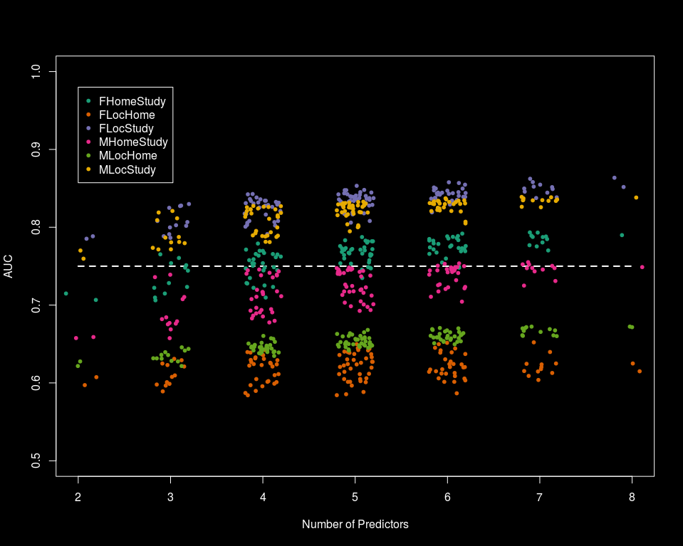
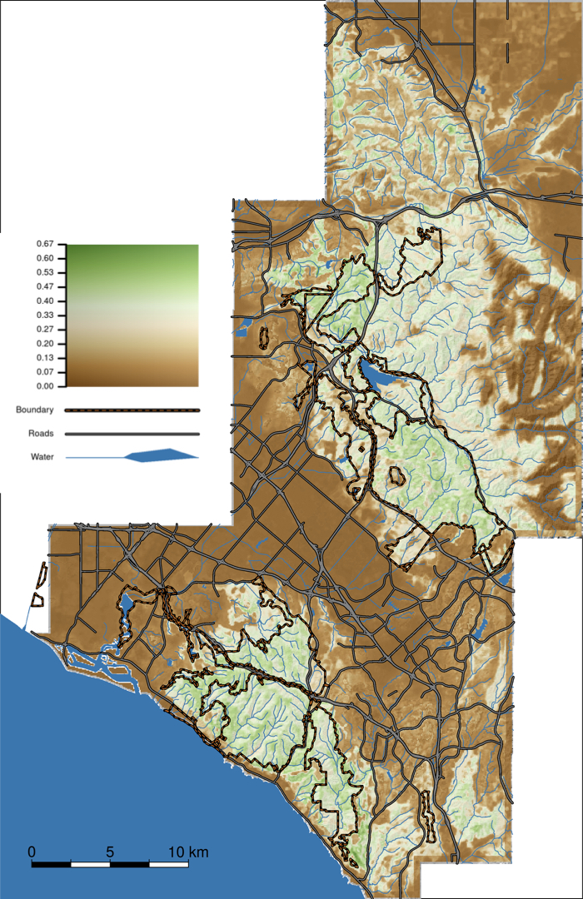
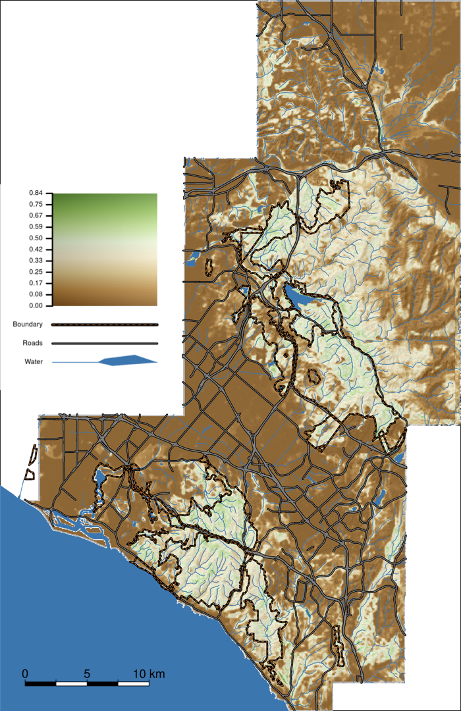
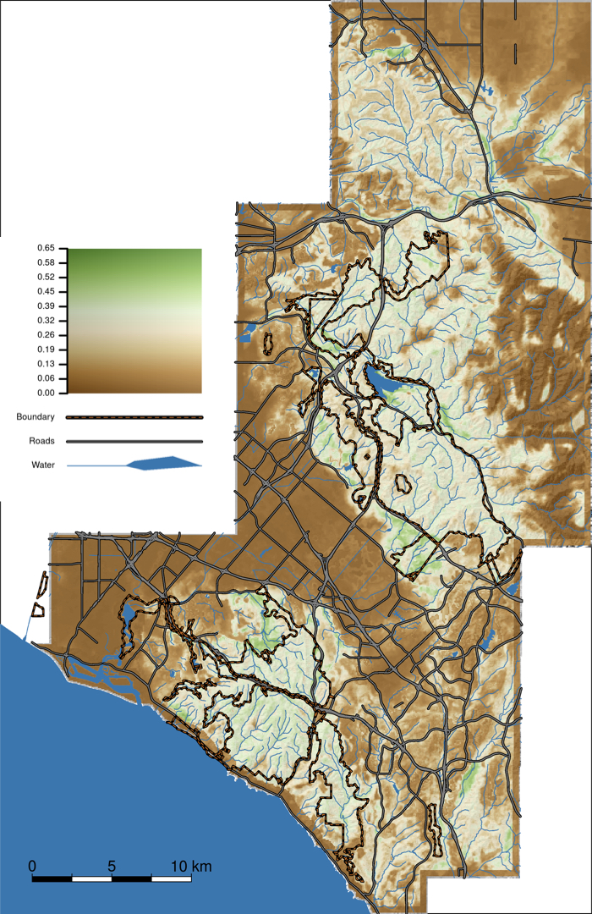
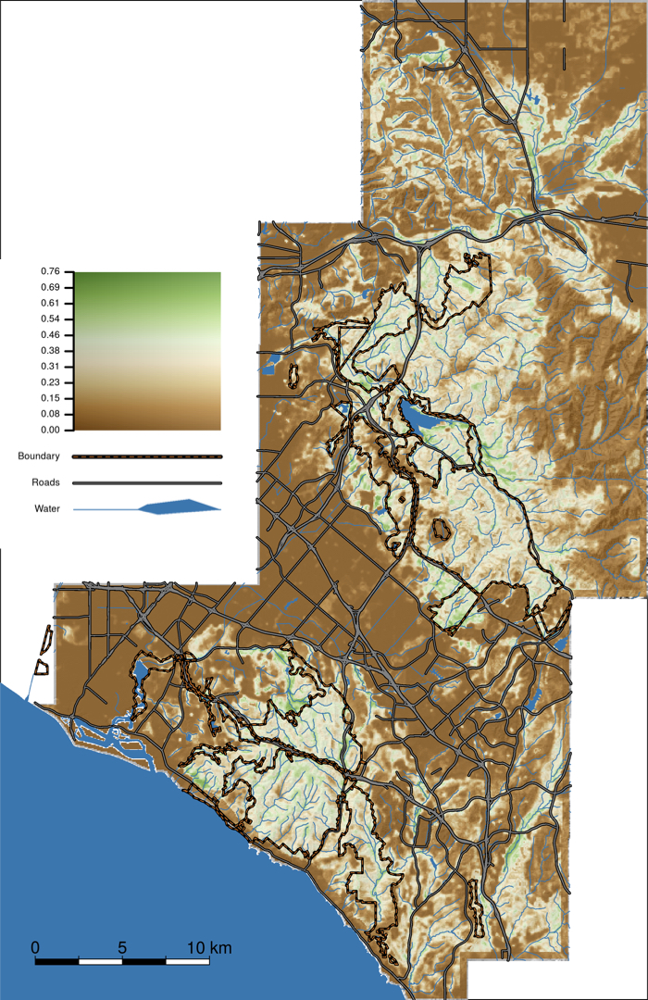

The Cognavitron — hover for details · click to navigate · double-click for full size
Bobcat Habitat Selection — Orange County, California
2026-06-17
Orange County, California is one of the most densely developed counties in the United States — and it contains a network of nature reserves, managed under the Orange County Central and Coastal Natural Communities Conservation Plan (NCCP), designed to protect biodiversity in exactly this kind of fragmented urban-wildland matrix. Bobcats (Lynx rufus) are a focal species for this reserve network: wide-ranging, habitat-sensitive, and dependent on connectivity between patches for long-term population persistence.
This project asked: which parts of the landscape do bobcats actually select, and does that differ by sex and by the scale at which selection is measured? The answers have direct implications for where reserve lands are most valuable and where connectivity most matters.
This work was prepared in cooperation with the Natural Communities Coalition and is documented in Boydston & Tracey (2018). I developed all spatial analyses and statistical models; this report received a USGS Star Award.
Study System and Data
GPS telemetry data from 30 male and 21 female bobcats tracked in and around Orange County NCCP reserve lands from 2002–2009. The study area is a mosaic of chaparral, coastal sage scrub, oak woodland, and grassland embedded in a densely urbanized matrix — one of the most challenging landscapes a medium-sized carnivore can navigate in North America.
Environmental predictors included terrain metrics (Topographic Position Index, Vector Ruggedness Measure, slope), climate variables (precipitation, temperature), vegetation indices (NDVI, NDWI), distance to roads and streams, land use/land cover, proportion urban (within 125-m radius), log patch area, and log distance to nearest patch — all derived from high-resolution spatial data layers maintained by the San Diego Association of Governments and USGS.
Multi-Scale Resource Selection
Following Johnson’s (1980) hierarchical framework, I modeled habitat selection at two spatial scales:
- 2nd order (home range vs. study area; Comparison B): which parts of the landscape do bobcats establish home ranges in, relative to what is available across the study area?
- 3rd order (GPS locations vs. study area; Comparison C): which specific locations do bobcats use, relative to study-area availability?
I also tested within–home range selection (locations vs. home range; Comparison A), but AUC values were uniformly low (0.58–0.67) across all candidate models — likely because the density of GPS fixes from modern collars makes used and available samples more similar within a home range than in earlier VHF studies. Comparisons B and C were retained for final mapping.
Models were fit separately for males and females, yielding four RSF maps in total.
Modeling Approach
I used Generalized Additive Mixed-Effects Models (GAMMs) implemented in R (mgcv::gamm()), which allowed smooth, non-linear responses to habitat covariates while accounting for individual variation via bobcat-specific random intercepts — appropriate for repeated-measures GPS telemetry data.
Candidate predictor pool. All variables considered:
| Category | Variables |
|---|---|
| Topography | Slope, TPI (500 m window), VRM (500 m window), Unevenness (SD of total curvature, 224-m radius) |
| Climate | Mean annual precipitation, mean minimum January temperature, mean maximum August temperature |
| Primary productivity | NDVI, NDWI |
| Linear features | Distance to nearest road, distance to nearest stream (and log-transformed) |
| Land cover | LULC category (NAIP-derived), proportion urban (125-m radius), proportion no-cover (125-m radius), proportion veg cover (125-m radius) |
| Fragmentation | Log patch area, log distance to nearest habitat patch (FRAGSTATS, ~771 patches) |
Two-stage model fitting.
Exploratory stage: Fit models across all candidate predictors to identify those with the most influence on AUC. Predictors that consistently showed little discriminatory power were dropped.
Exploitation stage: Constructed 128 alternative models from every combination of four land-cover term sets × seven topographic term sets × three miscellaneous term sets — using the eight predictors retained from stage 1: Urban125m, NoCover125m, VegCover125m, Unevenness, VRM500m, Slope, log(patch area), and log(distance to nearest stream). Models ranged from 2 to 8 predictors. Evaluated by AUC (ROC) on training data; minimum acceptable threshold = 0.75.
Final maps were constructed as the mean prediction across all models with AUC ≥ 0.75 within each sex × comparison combination, with standard deviation layers capturing among-model uncertainty.
Model performance (AUC range across selected models):
| Comparison | Female | Male |
|---|---|---|
| C — locations vs. study area | 0.785–0.864 | 0.760–0.839 |
| B — home range vs. study area | 0.706–0.793 | 0.658–0.755 |
| A — locations vs. home range | 0.584–0.652 (excluded) | 0.622–0.672 (excluded) |

Habitat Selection Maps
Maps show the mean predicted probability of selection across Orange County for each model. Color scale: green = higher probability of selection; brown/tan = lower probability (urban and developed areas). Reserve boundaries shown as dashed orange lines; roads in black; water in blue.
Female Bobcats


Male Bobcats


Key Findings
Female bobcats were more dependent on reserve habitat than males. At both selection scales, female home range establishment and location use were tightly associated with NCCP reserve lands. This likely reflects the importance of core habitat quality for females with home ranges centered on territory defense and den site selection.
Male bobcats used undeveloped areas both within and outside reserves. The larger typical home range sizes of males — and their wider movements associated with mate-seeking — meant that suitable habitat outside formal reserve boundaries was also important for the male population.
Both sexes showed strong urban avoidance. The proportion of urban land cover within a 125-m radius was among the strongest negative predictors of selection at both scales, consistent with the fine-scale urban avoidance documented at the move-step level in related work (Tracey et al. 2018, golden eagle synoptic models).
Small patches of suitable habitat exist outside reserves. The maps identify areas outside formal NCCP boundaries that showed characteristics associated with bobcat use — potential targets for restoration, connectivity enhancement, or reduced edge effects.
Conservation Context
These models were developed to support management and planning decisions for the Orange County NCCP reserve network — one of the most ambitious urban habitat conservation plans in the US. The habitat selection maps provide a spatially explicit basis for identifying core areas, prioritizing connectivity, and evaluating the adequacy of the reserve network for a species that requires both core habitat and movement corridors across a fragmented urban landscape.
See also: Bobcat Movement — Finite Mixture Models for the behavioral landscape work using the same study system, and Ecology of Infectious Disease for agent-based disease transmission modeling motivated by FIV dynamics in this bobcat population.
Papers and Reports
Boydston EE, Tracey JA (2018). Modeling resource selection of bobcats (Lynx rufus) and vertebrate species distributions in Orange County, southern California. USGS Open-File Report 2018-1095. https://doi.org/10.3133/ofr20181095
Lyren LM, Turschak GM, Ambat ES, Haas CD, Tracey JA, Boydston EE, Hathaway SA, Fisher RN, Crooks KR (2006). Carnivore activity and movement in a southern California protected area, the North/Central Irvine Ranch. USGS Western Ecological Research Center Technical Report, 115 p. Prepared for The Nature Conservancy.
Ruell EW, Riley SPD, Douglas MR, Antolin MF, Pollinger JR, Tracey JA, Lyren LM, Boydston EE, Fisher RN, Crooks KR (2012). Urban habitat fragmentation and genetic population structure of bobcats in coastal southern California. The American Midland Naturalist 168(2): 265–280. https://doi.org/10.1674/0003-0031-168.2.265